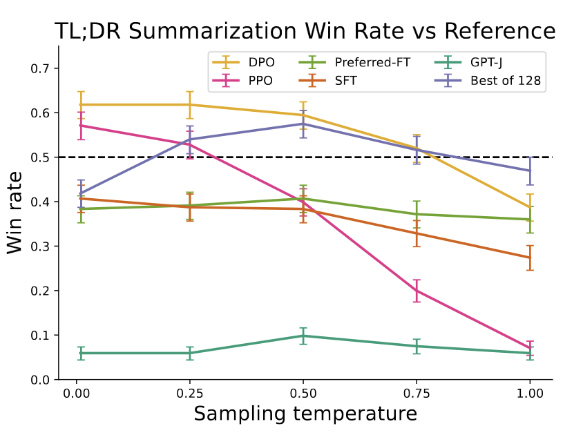

Why this paper?
Following the latest advancements in LLM training, I’ve been interested in Direct Preference Optimization (DPO), a technique emerging as a superior method. The buzz around DPO was further amplified by Andrew Ng’s tweet, praising the method for its simplicity and profound insight.
1-minute summary
In the realm of Large Language Model (LLM) training, Direct Preference Optimization (DPO) emerges as a promising technique that streamlines the process by bypassing the complexities of traditional Reinforcement Learning from Human Feedback (RLHF). Unlike RLHF, which relies on a separate reward model to fine-tune LLMs based on human or AI-generated preferences, DPO integrates preference optimization directly into the language model training process. It does so by defining the preference loss directly as a function of the policy, instead of training a separate preference reward model. DPO enhances model performance and alignment with human preferences, as demonstrated in tasks ranging from sentiment analysis to content summarization and dialogue generation. This blog delves into some technical nuances of DPO, contrasts it with traditional methods, and highlights its superior efficiency and effectiveness through various application examples1.
If you just want the key results, skip to this section. Two useful blogs about DPO that I referred to: 1, 2.
Background
Before we dive deep into DPO, let’s do a quick overview of LLM training process:
- Pretraining: LLMs undergo self-supervised training with vast internet-scale data, focusing primarily on next-token prediction. This stage doesn’t require labeled data, although the quality of the data is still vital.
- Instruction Fine Tuning or Supervised Fine tuning (SFT): Quoting from the DPO paper: “performance on downstream tasks and alignment with user intent can be significantly improved by fine-tuning on datasets of instructions and humanwritten completions. This ‘instruction-tuning’ procedure enables LLMs to generalize to instructions outside of the instruction-tuning set and generally increase their usability”. Llama 2 paper used around 14,000 such examples for their SFT training. This model would be referred to as \(\pi^{\text{SFT}}\). Quick note on notation.
- Reinforcement Learning from Human Feedback (RLHF): Since generating expert human responses for instructions is costly, the focus shifted towards collecting human preferences between answers, which are simpler to label and gather, forming a preference dataset. It is created by generating multiple outputs (\(y_1, y_2\)) for each prompt (\(x\)) using an SFT model (\(\pi^{\text{SFT}}\)), and then using humans or another LLM to order them (preferred: \(y_w\), dispreferred: \(y_l\)), hence the preference. In RLHF, a reward model is first trained on the preference dataset (usually an LLM itself) and then the SFT model is fine tuned to maximise the reward using reinforement learning algorithms.
DPO paper states: “… fine-tuning large language models with reinforcement learning remains a major practical challenge; this work provides a theoretically-justified approach to optimizing relative preferences without RL”.
RLHF
The paper does a pretty good job of summarising RLHF and related steps Fig1. The preference dataset generated by human labels (or AI labels) is actually a proxy for the latent reward model (which we don’t have access to). Next, given reward values for two outputs \(y_1, y_2\), Bradley Terry (BT) model can be used to compare them. i.e:
\[ \text{Probability of comparison A > B} = \frac{\text{Score}(A)}{\text{Score}(A) + \text{Score}(B)} \]
where instead of score, we will use rewards from the reward model. Typically, given a dataset of prompts \(x^i\) and preferences (\(y_w, y_l\)), the reward model can be trained by maximising the likelihood:
\[ \mathcal{L}_R = -\mathbb{E}\left[ \log \sigma(r(x, y_w)) - r(x, y_l))\right] \tag{1} \]
which is basically logistic of the difference of the reward of preferred and reward of the dispreferred. Note that only difference of rewards are needed here. Using this, a reward model is trained. This is then used to provide feedback to the language model using the following optimization:
\[ \max_{\pi_\theta} \mathbb{E}_{x\sim D, y\sim \pi_\theta(y|x)}\left[ r_\phi(x,y) \right] - \beta D_{KL}\left( \pi_\theta(y|x) || \pi_{\text{ref}}(y|x) \right) \tag{2} \]
This expression is maximizing the expected value of reward (\(r_\phi(x,y)\)), minus a Kullback-Leibler divergence term between current policy \(\pi_\theta(y|x)\) and the reference policy \(\pi^{\text{SFT}}(y|x)\). \(y\) is the output of the \(\pi_{\theta}\) model with input \(x\). The KL term prevents the model to deviate too far away from the reference policy which leads to coherent outputs (RLHF paper).
THe authors state that this objective is non-differentiable, and therefore is optimized with reinforcement learning. We discussed a bit on it and were a little unsure why that is the case. Maybe because the preference model is essentially a ranking model and ranking loss is often non differentiable.
DPO
From the paper: “This … approach avoids fitting an explicit, standalone reward model, while still optimizing under existing models of human preferences, …. In essence, the policy network represents both the language model and the (implicit) reward.” If you are interested, feel free to take a look at the complete derivation on this blog. Briefly, they show that by writing the reward in terms of the policy:
\[ r(x, y) = \beta \log \left( \frac{\pi_r(y | x)}{\pi_{\text{ref}}(y | x)} \right) + \log Z(x). \tag{3} \]
and using that in the likelihood estimate for RHLF (equation 2), we can obtain the DPO objective as:
\[ \mathcal{L}_{DPO}(\pi_\theta; \pi_{\text{ref}}) := -\mathbb{E}_{(x,y_u,y_l)\sim D} \left[ \log \sigma \left( \beta \log \frac{\pi_\theta(y_u | x)}{\pi_{\text{ref}}(y_u | x)} - \beta \log \frac{\pi_\theta(y_l | x)}{\pi_{\text{ref}}(y_l | x)} \right) \right]. \tag{4} \]
Finally, they obtain the gradient of loss function for DPO:
\[ \nabla_{\theta} \mathcal{L}_{\text{DPO}}(\pi_{\theta}; \pi_{\text{ref}}) = -\beta \mathbb{E}_{(x,y_w,y_l)\sim D} \left[ \sigma(\hat{r}_{\theta}(x, y_l) - \hat{r}_{\theta}(x, y_w)) \left[ \nabla_{\theta} \log \pi_{\theta}(y_w|x) - \nabla_{\theta} \log \pi_{\theta}(y_l|x) \right] \right], \]
Where, \[ \hat{r}_\theta(x, y) = \beta \log \frac{\pi_\theta(y|x)}{\pi_{\text{ref}}(y|x)} \]
There are two terms in this equation. Let’s start with the second term: \[ \nabla_{\theta} \log \pi_{\theta}(y_w|x) - \nabla_{\theta} \log \pi_{\theta}(y_l|x) \]
Increases the probability of favored output (\(\nabla_{\theta} \log \pi_{\theta}(y_w|x)\)) and decrease the probability of disfavored output (\(\nabla_{\theta} \log \pi_{\theta}(y_l|x)\)).
Now the first term: \[ \begin{align} \sigma(\hat{r}_{\theta}(x, y_l) - \hat{r}_{\theta}(x, y_w)) =\sigma(\beta \log \frac{\pi_\theta(y_l|x)}{\pi_{\text{ref}}(y_l|x)}\frac{\pi_{\text{ref}}(y_w|x)}{\pi_\theta(y_w|x)}) \end{align} \]
This term comes from the KL penalty, essentially preventing model from diverging too far away from the reference model. Here, \(\hat{r}_{\theta}\) is the implicit reward model, and so the gradient is weighted by how much the reward model rates dispreferred completions.
From 1: “Thus, instead of first learning a reward and then finding the optimizing policy, one directly finds the optimal policy such that its reward as obtained corresponds to collected human preferences.”
DPO Steps:
- Get outputs (\(y1, y2\)) from an SFT model (\(\pi^{\text{SFT}}\))
- Ask humans or LLM to give preferences on those (\(y_w, y_l\))
- Train \(\pi_{\theta}\) starting from (\(\pi^{\text{SFT}}\)) using the DPO objective.
Note: If you have the preference dataset, but don’t have acces to the underlying \(\pi^{\text{SFT}}\) then the authors take an off the shelf LLM and supervise fine-tune it using the prompts and preferred outputs of the preference dataset to get \(\pi^{\text{SFT}}\). They then do DPO on it.
Results
They explored three different tasks: Sentiment generation on IMDb dataset, summarization of Reddit posts, single turn dialogue (replying to a human query). For sentiment generation task, they use a sentiment classifier for evaluation, and for others they use GPT4 as a proxy for human evaluator to evaluate the win rate against a baseline policy. They also conduct a human study to justify their usage of GPT-4 for evaluation and find that GPT-4 judgments correlate strongly with humans, with human agreement with GPT-4 typically similar or higher than inter-human annotator agreement.
They test DPO againsst the following approaches: PPO, Best of N (sampling N responses and returning highest scoring on reward), Unlikelihood (maximizes probability of \(y_w\) and minimizes probability of \(y_l\)), GPT-J, Pythia-2.8B, SFT model, Preferred-FT (SFT on \(y_w\)).
|  | ||
| Summarization win rates vs. human-written summaries. | Win rate for one step dialogue. | Win rates for different sampling temperatures over the course of training. |
Key results:
- DPO is efficient, achieving the highest reward while still achieving low KL with respect to reference policy (Fig2).
- DPO exceeds PPO’s performance on summarization, and on one step dialogue task. DPO is even better than (very computationally expensive) “best of N” in most cases (Fig3, Fig4).
- DPO is much more robust to sampling temperature than PPO (Fig3).
- DPO converges to its best performance relatively quickly (Fig4).
- DPO generalizes to new input distribution better than PPO (but the difference is not very significant).
Discussion
We found this paper interesting, though the derivation was hard to follow sometimes. The main idea of the paper is simple and powerful: instead of doing RL, you can use the LLM itself as a reward model (by comparing the reward of the model at a training stage with respect to the reward of the SFT model), and only use the difference in the rewards (between favored and disfavored outputs) to train the model for external preferences. Referencing online blogs that explained the derivation well helped. We had to go back and forth between main paper and appendix to follow the derivation, but once you see all the steps, it makes sense. Though we still felt that although we understood mathematically how an equation was derived, obtaining the intuition for that needed more discussion. This was specially true for the gradient of objective for DPO, where we spent some time understanding each term.
We also discussed at length about what exactly the reward model is, and what is meant by \(\pi\) (and in general the notation used in the paper). The results clearly showed that DPO was better, though authors were careful in stating that further tests are needed on larger models. The authors claimed that PPO is unstable, though we were not sure why, and how DPO resolves that. We also discussed what it meant for the RLHF reward to be “non-differentiable”. We were not sure why the authors didn’t tune beta parameter to further optimize DPO performance. We appreciated the authors comparing the GPT-4 judgements with Human judgements, and showing that “GPT-4 tends to agree with humans about as often as human agree with each other”. Towards the end, we looked at some example outputs authors provide for various prompts.
Notation
\(\pi^{\text{SFT}}(y | x)\): refers to probability of getting output sequence \(y\) given input sequence \(x\). This will be computed as product of probability of each word which can be obtained from the probabilities of all the words in the vocabulary that the model outputs (as explained in second figure of this blog).
\(r (y, x)\): Reward of \(y\) with \(x\) as input. Or the probability of \(y\) given \(x\) as input as per the reward model.
If you found this post useful, you can cite it as:
@article{
austinmljc-2024-dpo,
author = {Kshitij Aggarwal},
title = {Direct Preference Optimization: Your Language Model is Secretly a Reward Model},
year = {2024},
month = {01},
day = {25},
howpublished = {rl{https://austinmljournalclub.github.io}},
journal = {Austin ML Journal Club},
url = {https://austinmljournalclub.github.io/posts/20240125/},
}Footnotes
Edited with assistance from ChatGPT↩︎